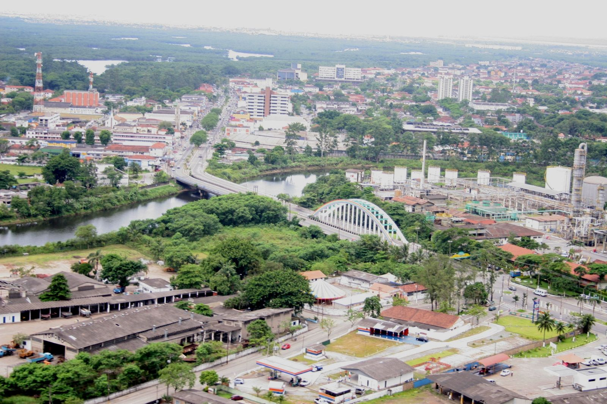
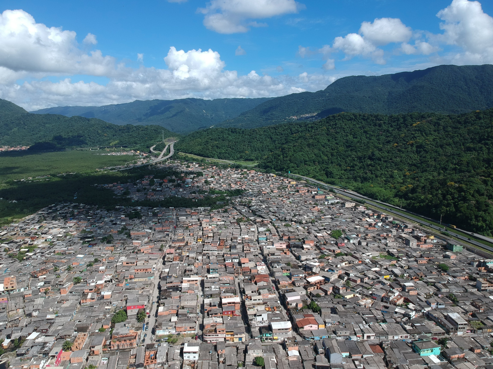
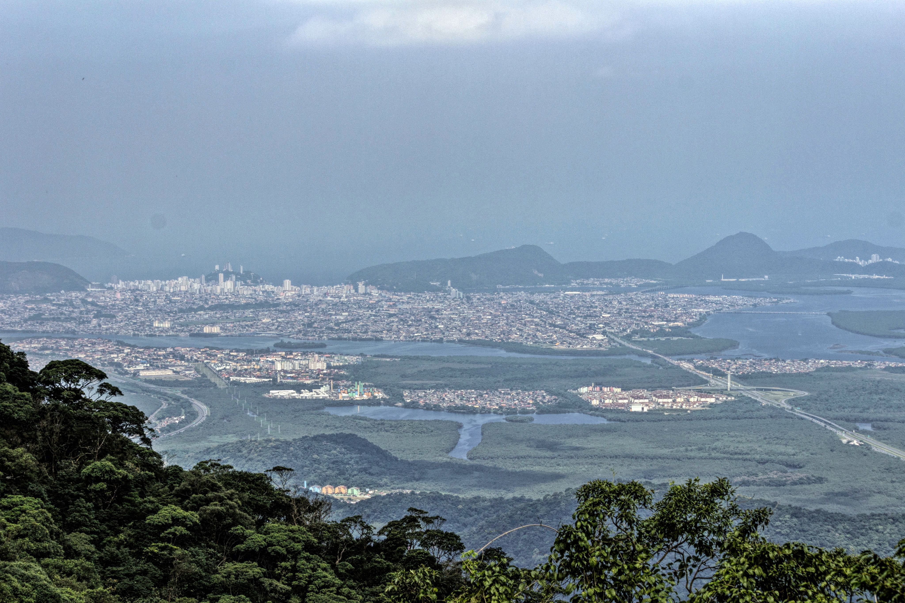

CUBATÃO
História de Cubatão
A região de Cubatão já era usada desde o período colonial como rota de passagem entre o litoral e o planalto (ligando o porto de Santos ao interior).
Cresceu muito no século XX com a instalação de indústrias pesadas, como siderúrgicas e petroquímicas.
Nos anos 1980, ficou conhecida como uma das cidades mais poluídas do mundo.
Depois disso, passou por um grande processo de recuperação ambiental, sendo hoje um exemplo de melhoria ecológica.
Curiosidades
- Cubatão já foi chamada de “Vale da Morte” por causa da poluição extrema nos anos 80.
- Hoje é reconhecida internacionalmente pela recuperação ambiental.
- É uma das cidades mais importantes do Brasil na área industrial.
- Apesar de não ter praias, está muito próxima de destinos como Santos e Guarujá.
Pontos Turísticos
- Vale do Rio Cubatão – Região com paisagens naturais e importância ambiental.
- Parque Estadual da Serra do Mar – Área preservada com trilhas, cachoeiras e grande biodiversidade.


